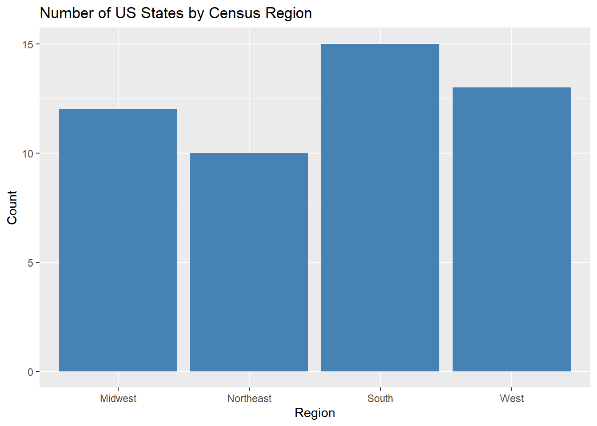
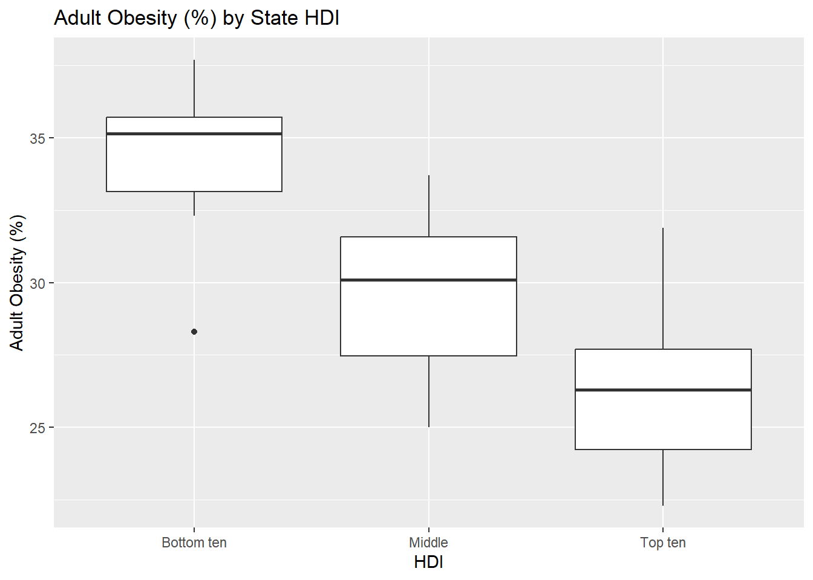
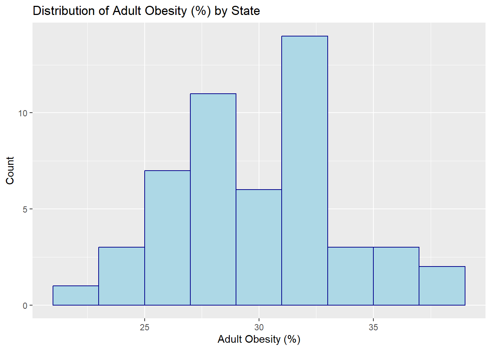
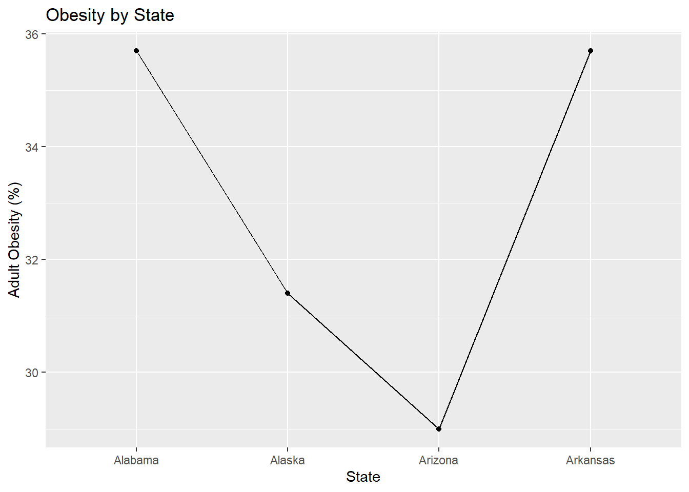
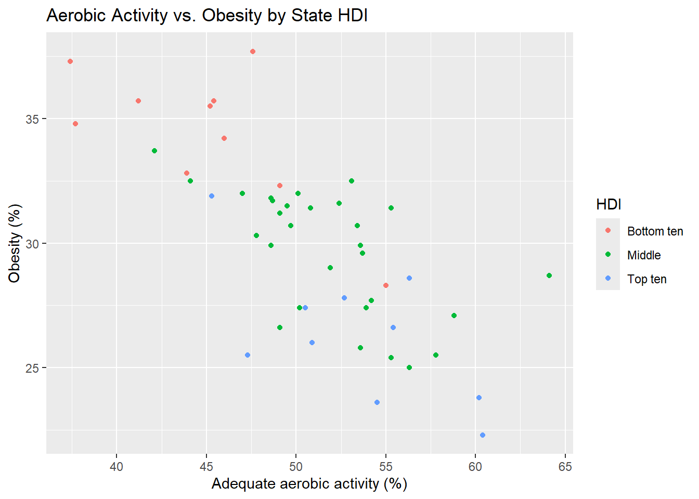

cdc <- read.csv("https://karamccor.github.io/b6002/labs/data/cdc_cleaned.csv")Lab 02: Basic Data Visualization
Due Friday, Jan 23 at 11:59pm.
Set up
In Canvas, you’ll find the template for this assignment (“Lab 02 Template”). Download the file and open it.
Save it in your class project folder as “
lab-02.qmd”.Open the document. Replace “Your Name Here” with your name in the YAML (the header of the document). Also, replace “Today’s Date Here” with today’s date.
Note the R chunks
In opening the lab template, note the R chunks. The beauty of .qmd documents is that we can directly run code in them, and the outputs will appear in your final document. To do that, we create an R chunk, which you will see in your template as gray areas where you can write R code. The R code in chunks will be evaluated and displayed in the final rendered document.
Note that the rendering environment from R chunks and the Console are separate. This means that if you load a dataset in the Console, it will not be available in R chunks unless you also load it into R chunks.
Similarly, if you load in a dataset in the R chunk and render the document, the dataset will be in the R chunk environment, but will not exist in the Console. Thus, if you wish to load in a dataset and use it for displaying results in your final rendered document, the dataset must be loaded into an R chunk regardless of whether you have already loaded it into the Console.
The tidyverse
As mentioned previously, one of the biggest strengths of R is its large userbase who have contributed user-written functions to R via packages. R packages are “add-ons” to the basic functions available in R (think of them as apps on a phone).
The
tidyverseis a collection of packages designed around a common grammar and data structure.Some packages in the tidyverse that we will be using throughout this semester will be
ggplot2, used for creating graphics and figures, anddplyrandtidyr, used for data manipulation and wrangling.
Loading the CDC dataset
Once again, let’s load the cdc dataset. Enter the following command into the console for now (you can directly copy/paste it, but make sure everything is exactly as below):
First, install the tidyverse package by running the following code in your R Studio console:
install.packages("tidyverse")After installing the tidyverse package, you never have to install it again on your device – all that is needed to use functions from the tidyverse is to load the package once per R session using the following code:
- (This code is already written for you in an R chunk in your template. To run the chunk, click the green arrow at the upper right corner of the chunk. The data will also be loaded in at the same time.)
library(tidyverse)Warning: package 'tidyverse' was built under R version 4.5.2Warning: package 'readr' was built under R version 4.5.2Warning: package 'stringr' was built under R version 4.5.2Warning: package 'forcats' was built under R version 4.5.2── Attaching core tidyverse packages ──────────────────────── tidyverse 2.0.0 ──
✔ dplyr 1.1.4 ✔ readr 2.1.6
✔ forcats 1.0.1 ✔ stringr 1.6.0
✔ ggplot2 3.5.2 ✔ tibble 3.3.0
✔ lubridate 1.9.4 ✔ tidyr 1.3.1
✔ purrr 1.1.0
── Conflicts ────────────────────────────────────────── tidyverse_conflicts() ──
✖ dplyr::filter() masks stats::filter()
✖ dplyr::lag() masks stats::lag()
ℹ Use the conflicted package (<http://conflicted.r-lib.org/>) to force all conflicts to become errorsNotice that by default, R automatically prints extra information about the package that was just loaded. You’ll want to hide this information in your assignments to make them neater. In the next section, we’ll find out how to do so.
Code Chunk Options
When you write code in Quarto, you put it inside code chunks. These chunks can have options that control how the code runs and what shows up in the final document.
Some of the most useful options are:
label – a short name you give each chunk. Helps organize your document and makes it easier to debug if there’s an error.
- Every chunk in your assignment should have a unique, descriptive label (e.g. setup, load-data, summary-stats, plot1).
warning – controls whether R warnings are shown in the output. - By default, R will print warnings (e.g., “package is built under a different R version”). To keep your document neat, set warning = FALSE if you don’t want those to print.
message – controls whether messages are shown. For example, when you load tidyverse, R prints a lot of startup messages. You don’t need those in your assignment, so set message = FALSE.
NoteFormatting
On this assignment and all HW/Labs going forward, there will be a “Formatting” portion of the grading rubric. To earn full points, you should ensure there are no messages, warnings, or lengthy code output printed in your document. To do this, be sure to set message = false and warning = false in your code chunks where you load packages/data. This is a good practice to prepare you to work with collaborators in the future!
In your Quarto template, find the chunk that loads in the CDC dataset. Which options are used in this chunk?
So, what’s the difference between library and install.packages?
A baking analogy: Imagine you want to bake a cake. You need to get the necessary kitchen gadgets in order to bake the cake. install.packages() is like going to the store and buying a KitchenAid mixer. library is like taking the KitchenAid mixer out of the pantry to actually bake the cake. When you want to bake another cake in 2 weeks, all you need to do is take the KitchenAid out of the pantry (you don’t need to buy another one). Similarly, you only need to run install.packages() once per machine, per package. Then, every time you use a package, simply “activate” it using library().
A quick note before we get started
Remember that the console and the Quarto document have different workspaces. If you load the tidyverse package in your console, it won’t be loaded into the workspace for the Quarto document. In the lab template, code for loading the tidyverse has already been provided. However, note that you must have the package installed first.
Also, it’s good practice to render often after making small changes to your document. This way, you can ensure you fix any coding issues as they arise.
Basic data manipulation
First, let’s take a glimpse of the dataset by running the following code in the console:
glimpse(cdc)Rows: 50
Columns: 17
$ X <int> 1, 2, 3, 4, 5, 6, 7, 8, 9, 10, 11, 12, 13, 14, 15,…
$ State <chr> "Alabama", "Alaska", "Arizona", "Arkansas", "Calif…
$ Region <chr> "South", "West", "West", "South", "West", "West", …
$ HDI <chr> "Bottom ten", "Middle", "Middle", "Bottom ten", "M…
$ InfantMortalityRate <dbl> 8.7, 6.7, 6.1, 7.5, 4.3, 4.8, 4.8, 6.7, 6.1, 7.5, …
$ CVDeathRate <dbl> 229.7, 154.1, 138.8, 223.2, 145.6, 128.4, 147.8, 1…
$ DrugDeathRate <dbl> 15.7, 16.0, 19.0, 13.8, 11.3, 15.4, 22.1, 22.0, 16…
$ MotorDeathRate <dbl> 17.5, 8.8, 13.1, 17.8, 8.1, 10.0, 7.4, 13.3, 14.5,…
$ CancerDeathRate <dbl> 175.6, 159.8, 141.3, 185.4, 142.8, 134.4, 146.2, 1…
$ Obesity <dbl> 35.7, 31.4, 29.0, 35.7, 25.0, 22.3, 26.0, 30.7, 27…
$ Smoking <dbl> 21.5, 19.0, 14.7, 23.6, 11.0, 15.6, 13.4, 17.7, 15…
$ Exercise <dbl> 45.4, 55.3, 51.9, 41.2, 56.3, 60.4, 50.9, 49.7, 50…
$ Seatbelt <dbl> 95.7, 88.4, 87.2, 74.4, 97.1, 82.4, 85.1, 91.9, 88…
$ FluVaccination <dbl> 43.9, 39.1, 41.8, 46.2, 48.0, 49.9, 52.7, 51.2, 43…
$ ChildVaccination <dbl> 70.6, 66.3, 72.3, 66.6, 75.0, 75.4, 80.6, 79.3, 66…
$ Under18 <dbl> 22.8, 25.3, 24.1, 23.8, 23.6, 23.3, 21.6, 21.8, 20…
$ Over65 <dbl> 15.3, 9.4, 15.9, 15.7, 12.9, 12.7, 15.5, 16.4, 19.…Each row is an observation and each column is a variable. How many rows and columns does the cdc dataset have? What does each row (observation) represent?
Data visualization
Today we will be making some basic visualizations using the ggplot package in the tidyverse.
In this section we’ll work through a visualization example using the cdc dataset. The variables in this dataset are as follows:
State, the name of the stateRegion, the US Census region that each state belongs toHDI, the Human Development Index of each state in 2017, categorized into whether they are among the top ten, the bottom ten, or the middleInfantMortalityRate: infant mortality rate per 100,000CVDeathRate: death rate per 100,000 due to cardiovasulcar causesDrugDeathRate: death rate per 100,000 due to drug-related causes (ODs, etc.)MotorDeathRate: death rate per 100,000 due to motor vehicle-related causesCancerDeathRate: death rate per 100,000 due to cancerObesity: % of adults who are obeseSmoking: % of adults who smoked at least one cigarette in the past monthExercise: % of adults who participated in at least 2.5 hours of aerobic activity per weekSeatbelt: % of adults to regularly wear their seat beltFluVaccination: % of adults who received a flu vaccineChildVaccination: % of children who aged 19-35 months who have received the DTaP, polio, MMR, Hib, hepatitis B, varicella and PCV vaccinesUnder18: % of residents under age 18Over65: % of residents over age 65
Let’s begin with a very simple plot. Run the following code in the console:
ggplot(data = cdc, mapping = aes(x = Exercise, y = Obesity)) +
geom_point()We just created our first plot in R! Let’s break down what each of these components is.
ggplot()is the function that tells R to make a plot.We are plotting data from the
cdcdataset, withExerciseon the x-axis andObesityon the y-axis.Adding (+) the
geom_point()in a new layer (separated on a new line for clarity) tells R specifically to create a scatterplot.
Note that you can almost “read” this code in English:
“First create a ggplot using the”cdc” dataset. We will map the “Exercise” variable to the x-axis aesthetic, and map the “Obesity” variable to the y-axis aesthetic. Next, we will use the “point” geometry to create a scatterplot using these variable mappings.”
Does there appear to be a relationship between the percentage of adults in a state who participate in at least 2.5 hours of aerobic exercise a week and the percentage of adults in that state who are obese? If so, what is this relationship?
Now run the following code:
ggplot(data = cdc, mapping = aes(x = Exercise, y = Obesity, color = HDI, shape = HDI)) +
geom_point()Again, how does this code differ from the previous plot, and what changes in the plot itself correspond to the additional code?
Exercise 1
How does the HDI of a state relate to the percentage of residents in each state who get 2.5 hours of aerobic activity and who are obese?
Example graphs
This section contains the code used to produce the basic graphs in the course slides. Take a moment to examine the similarities and differences between the code examples provided. What is your guess for what each line of code does, given the graphs? What is the aesthetic mapping for each plot? What geometries are being plotted?
ggplot(data = cdc, mapping = aes(x = Region)) +
geom_bar(fill = "steelblue") +
labs(title = "Number of US States by Census Region",
x = "Region", y = "Count")
ggplot(data = cdc, aes(x = HDI, y = Obesity)) + geom_boxplot()+
labs(title = "Adult Obesity (%) by State HDI",
x = "HDI", y = "Adult Obesity (%)")
ggplot(data = cdc, aes(x = Obesity)) +
geom_histogram(color = "darkblue", fill = "lightblue", binwidth = 2)+
labs(title = "Distribution of Adult Obesity (%) by State",
x = "Adult Obesity (%)", y = "Count")
ggplot(data = cdc[1:4,], aes(x = State, y = Obesity, group = 1)) +
geom_line() +
geom_point() +
labs(title = "Obesity by State",
x = "State", y = "Adult Obesity (%)")
ggplot(data = cdc, mapping = aes(x = Exercise, y = Obesity, color = HDI)) +
geom_point() +
labs(title = "Aerobic Activity vs. Obesity by State HDI",
x = "Adequate aerobic activity (%)", y = "Obesity (%)")
ggplot(cdc, aes(x = Exercise, y = Obesity,
size = Smoking, color = Region)) +
geom_point(alpha = 0.7) +
labs(
title = "State-level Tradeoffs: Obesity, Exercise, and Smoking",
x = "Percent Exercising",
y = "Percent Obese",
size = "Smoking %",
color = "Region"
) +
theme_minimal()
Your turn!
In each of the following plots, make sure you have informative plot titles and axis labels.
Exercise 2
Modify the code used for the bar graph that counts the number of US States by Census Region such that the bars are colored pink. Which region has the most states? Which has the least?
Exercise 3
Create a visualization that explores the distribution of adults who smoke among different levels of the Human Development Index. (Hint: what type of visualization might be appropriate? Try modifying some of the code you see above, changing some of the variable names. Remember to also change any titles as needed. Provide an informative plot title, x-axis label, and y-axis label).
- Describe the distributions among each level of HDI - are they symmetric or skewed? Any outliers?
- How does smoking relate to Human Development Index in this dataset? Describe the pattern you see.
Exercise 4
Create a visualization that explores the relationship between flu vaccination rate (x-axis) and childhood vaccination rate (y-axis). What relationship(s) do you see? Make sure you have an informative title, x-axis label, and y-axis label.
Exercise 5
Create a visualization that explores the relationship between death rate per 100,000 due to cardiovascular causes (x-axis) and the percentage of obese residents in a state (y-axis). Color-code your plot based on HDI category. (Hint: Have we done a similar visualization earlier in this lab assignment? Modify the earlier code. You’ll need to add a title, x-axis label, and y-axis label). What relationship(s) do you see?
Exercise 6
Create boxplots to visualize the infant mortality rate (y-axis) by region (x-axis). Include an informative title, x-axis label, and y-axis label. Comment on the relationship(s) you see.
Submission
As you’ve seen previously, we can Render the template into an .html file that can be opened by any web browser. To export it as a .pdf, open the file in your web browser and then print to or save as a .pdf document. Your TAs will show you how if you need help! (There is a way to directly knit to a .pdf file, but it’s quite a bit more involved.)
You will submit the PDF documents for labs and homework to Gradescope as part of your final submission.
To submit your assignment:
Access Gradescope through the menu on the BIOS 600 Canvas site.
Click on the assignment, and you’ll be prompted to submit it.
Mark the pages associated with each exercise. All of the pages of your lab should be associated with at least one question (i.e., should be “checked”).
Select the first page of your .PDF submission to be associated with the “Formatting” section.
Grading
| Component | Points |
|---|---|
| Ex 1 | 2 |
| Ex 2 | 3 |
| Ex 3 | 4 |
| Ex 4 | 4 |
| Ex 5 | 4 |
| Ex 6 | 4 |
| Formatting | 3 |
| Total | 24 |
The “Formatting” grade is to assess the document format. This includes having a neatly organized document (no excessive output, warnings/messages when loading packages and/or data) with readable code and your name and the date updated in the YAML.